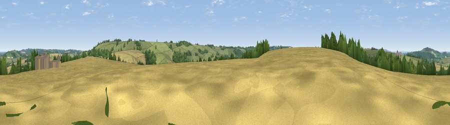

Viewpoint near Whichford
#32581 in England · top 67% of its area beats it · near Whichford · path 197 mWhere it is
The exact computed spot (SP 31175 33975). Click the marker for map links.
Public access: the nearest public right of way is about 197 m away — the final stretch may cross private land. Computed from Natural England's CRoW access layer and OpenStreetMap rights of way — not the legal definitive map. Always verify locally.
The view, rendered

A 360° render of this exact spot computed from the terrain model, tree cover and land cover — summer colours, afternoon light, calibrated against photographs of famous viewpoints. Real trees, hedges and buildings will differ in detail.
The panorama
Grey silhouette: terrain skyline in each direction (720 bearings, Earth curvature and refraction included). Dashed green: skyline with trees (+15 m) and buildings (+8 m) as obstacles. Blue strip: how far the ground is visible on each bearing.
Where the view opens
Wedge length = distance to the farthest visible ground on that bearing (vegetation-aware). Rings at 10, 25 and 50 km.
What fills the view
45% grassland · 42% cropland · 11% woodland ·
Angular shares of the visible panorama (visual magnitude), not map area. Landscape diversity 0.44 (0–1 Shannon).
Key numbers
More beautiful places nearby
The staircase of upgrades: each row has a higher view potential than everything closer. Driving times are estimates from straight-line distance, calibrated against real road routing — check an actual route before setting out.
| Place | Direction | Drive | Score |
|---|---|---|---|
| Viewpoint near Whichford | E · 2 km | ~5 min | 49.6 |
| Viewpoint near Whichford | E · 2 km | ~6 min | 52.3 |
| Viewpoint near Little Rollright | SSW · 3 km | ~8 min | 57.0 |
| Viewpoint near Little Compton | SW · 4 km | ~10 min | 67.2 |
| Viewpoint near Upper Brailes | NNW · 6 km | ~12 min | 68.5 |
| Viewpoint near Upper Tysoe | NNE · 8 km | ~17 min | 70.4 |
| Viewpoint near Ilmington | NW · 13 km | ~25 min | 72.6 |
| Viewpoint near Meon Vale | NW · 18 km | ~31 min | 77.0 |
52.00334, -1.54728 · source: screening · position refined by local search. Computed location — check access rights before visiting.